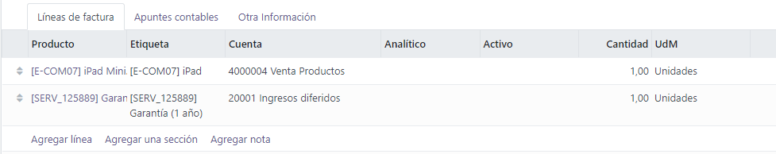
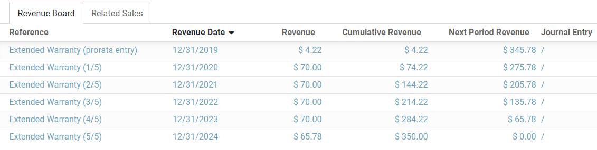
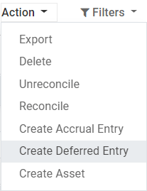

Ingresos diferidos¶
Los ingresos diferidos son los pagos anticipados que realizan los clientes por productos que no se han entregado o servicios que no se han prestado.
Estos pagos son un pasivo para la empresa que los recibe, ya que sigue debiendo a sus clientes estos productos o servicios. La empresa no puede incluirlos en la cuenta de pérdidas y ganancias, o en el estado de resultados, ya que los pagos se devengarán efectivamente en el futuro.
Estos ingresos futuros deben diferirse en el balance de la empresa hasta el momento en el que se puedan reconocer, al mismo tiempo o a lo largo de un periodo definido, en la cuenta de pérdidas y ganancias.
Por ejemplo, supongamos que vendemos una garantía amplia de cinco años por 350 dólares. Ya recibimos el dinero, pero aún no lo hemos ganado. Por lo tanto, contabilizamos este nuevo ingreso en una cuenta de ingresos diferidos y decidimos reconocerlo anualmente. Cada año, durante los próximos 5 años, se reconocerán 70 dólares como ingresos.
La contabilidad de Odoo administra los ingresos diferidos distribuyéndolos en varios asientos que se crean de manera predeterminada como borrador y luego se contabilizan periódicamente.
Nota
El servidor comprueba una vez al día si se debe publicar un asiento. Pueden pasar hasta 24 horas antes de que se refleje el cambio de borrador a registrado.
Prerrequisitos¶
Se deben contabilizar estas operaciones en una cuenta de ingresos diferidos en lugar de la cuenta de ingresos predeterminada.
Configurar una cuenta de ingresos diferidos¶
Para configurar su cuenta en el Plan de cuentas, vaya a , haga clic en Crear, y llene el formulario.

Nota
Esta cuenta debe ser tipo Pasivo circulante o Pasivo no circulante.
Contabilizar un ingreso en la cuenta correcta¶
Seleccionar la cuenta en un borrador de factura¶
En un borrador de factura, seleccione la cuenta correcta para todos los productos cuyos ingresos se deben diferir.
Elija una cuenta de ingresos diferente para productos específicos¶
Comience a editar el producto, vaya a la pestaña Contabilidad, seleccione la cuenta de ingresos correcta y guarde.

Truco
Es posible automatizar la creación de asientos de ingresos para estos productos ( ver: Automatizar los ingresos diferidos).
Modificar la cuenta de un apunte contable registrado¶
Para hacerlo, abra su diario de ventas yendo a , seleccione el elemento del diario que desea modificar, haga clic en la cuenta y seleccione la correcta.

Apuntes de ingresos diferidos¶
Crear un nuevo asiento¶
Un ingreso diferido genera automáticamente todos los asientos del diario en modo borrador. A continuación, se contabilizan uno a uno en el momento adecuado hasta que se reconoce el importe total de los ingresos.
Para crear un nuevo asiento, vaya a , haga clic en Crear, y complete el formulario.
Haga clic en selección de compras relacionadas para vincular un apunte del diario existente a este nuevo asiento. Algunos campos se llenarán automáticamente y el apunte del diario aparecerá en la pestaña Ventas Relacionadas.

Una vez hecho esto, puede hacer clic en Calcular ingresos (al lado del botón Confirmar) para generar todos los valores del Tablero de ingresos. Este tablero le muestra todos los asientos que Odoo registrará para reconocer sus ingresos, y la fecha en que lo hará.
¿Qué significa «Prorata Temporis»?¶
La función Pro rata Temporis es útil para reconocer sus ingresos con la mayor precisión posible.
Con esta función, el primer asiento en la tabla de ingresos se calcula según el tiempo que queda entre la fecha de prorrateo y la fecha de primer reconocimiento, en lugar de la cantidad de tiempo predeterminada entre los reconocimientos.
Por ejemplo, la tabla de ingresos anterior tiene su primer ingreso con un importe de $4.22 en lugar de $70.00. Por lo tanto, el último ingreso también es menor y tiene un importe de $65.78.
Asiento diferido del diario de ventas¶
Puede crear un asiento diferido desde un apunte específico en su diario de ventas.
Para hacer esto, abra su diario de ventas en y seleccione el apunte contable que desea diferir. Asegúrese de que está registrado en la cuenta correcta (consulte: Cambiar la cuenta de un apunte de diario registrado).
A continuación, haga clic en Acción, seleccione Crear asiento diferido, y complete el formulario de la misma manera que lo haría para crear un nuevo asiento.
Modelos de ingresos diferidos¶
Se pueden crear modelos de ingresos diferidos para crear más rápidamente los asientos de ingresos diferidos.
Para crear un modelo, vaya a , haga clic en Crear, y complete el formulario de la misma manera que lo haría para crear un nuevo asiento.
Truco
También se puede convertir un ingreso diferido confirmado en un modelo si lo abre desde y luego, hace clic en el botón Guardar modelo.
Aplicar un modelo de ingresos diferidos a un nuevo asiento¶
Cuando cree un nuevo asiento de ingresos diferidos, complete la cuenta de ingresos diferidos con la cuenta de reconocimiento correcta.
En la parte superior del formulario aparecen nuevos botones con todos los modelos vinculados a esa cuenta. Al hacer clic en un modelo, se completa el formulario según dicho modelo

Automatizar los ingresos diferidos¶
Cuando se crea o edita una cuenta de tipo Pasivo corriente o Pasivo no corriente, se puede configurar para diferir los ingresos que se abonan automáticamente en ella.
Hay tres opciones para el campo Automatizar ingresos diferidos:
No: es el valor predeterminado. No pasa nada.
Crear en borrador: cuando se registra una transacción en la cuenta se crea un borrador de asiento de ingresos diferidos, pero no se valida. Primero debe completar el formulario correspondiente en .
Crear y validar: también debe seleccionar un modelo de ingresos diferidos (ver: Modelos de ingresos diferidos). Cada vez que se registra una operación en la cuenta, se crea un ingreso diferido que se valida inmediatamente.

Truco
Puede, por ejemplo, seleccionar esta cuenta como la cuenta de ingresos predeterminada de un producto para automatizar totalmente su venta. (ver: Elija una cuenta de ingresos diferente para productos específicos).